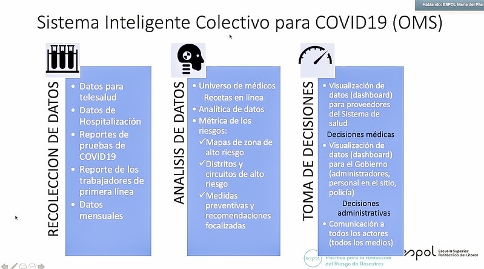
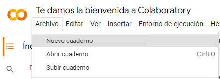
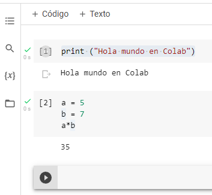
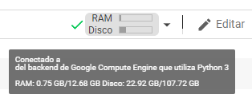
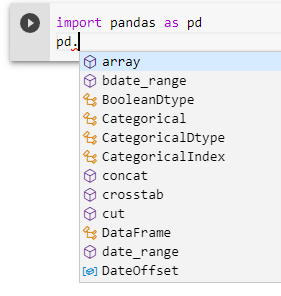
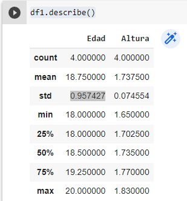
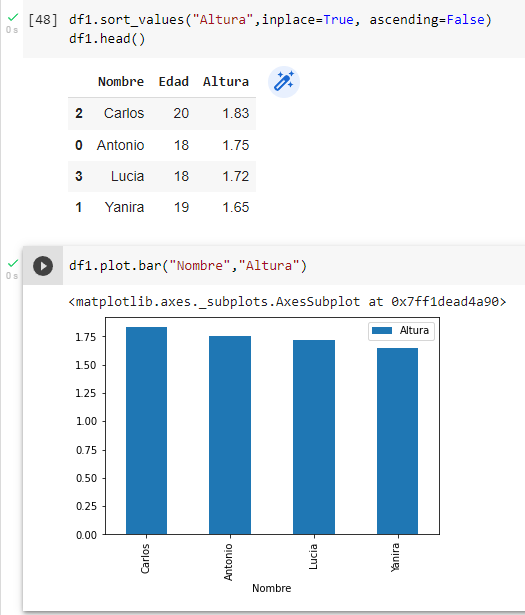

El análisis de datos es una técnica que se utiliza para examinar datos con el fin de extraer información útil y tomar decisiones basadas en esa información. Puede ser utilizado en una variedad de campos, como la ciencia de datos, el análisis de negocios y la investigación.
El análisis de datos permite a las personas y las empresas entender mejor sus datos y cómo se relacionan con el mundo que los rodea, lo que puede ayudar a mejorar la eficiencia, tomar decisiones informadas y resolver problemas.
Es imprescindible conocer cómo se realiza para poder alcanzar nuestro objetivo final.
1. Análisis de datos
Los datos del big data se analizan mediante el uso de herramientas y técnicas especializadas, como la minería de datos, la inteligencia artificial y el aprendizaje automático.
Estas herramientas permiten a las empresas y las organizaciones analizar grandes conjuntos de datos y extraer información valiosa y patrones ocultos que pueden ser utilizados para mejorar sus operaciones y tomar decisiones informadas.
En general, el análisis de los datos del big data implica tres pasos principales:
La recopilación de datos,
La limpieza y el preprocesamiento de los datos,
El análisis y la interpretación de los resultados.
Presentación y visualización de resultados (dashboard).
En la siguiente imagen podemos ver un ejemplo de proceso de recogida y análisis de datos para el COVID19.

Puedes descargar la descripción de la imagen en formato texto haciendo clic aquí.
2. Google Colaboratory
Una vez que tenemos los datos los siguientes pasos son su análisis y visualización para su presentación. Para ello, existen varias herramientas pero utilizaremos una de ellas por su facilidad de acceso y utilización, sin necesidad de disponer de grandes recursos informáticos.
Colaboratory, o "Colab" para abreviar, es un producto de Google Research. Permite a cualquier usuario escribir y ejecutar código arbitrario de Python en el navegador. Es especialmente adecuado para tareas de aprendizaje automático, análisis de datos y educación.
Desde un punto de vista más técnico, Colab es un servicio de cuaderno alojado de JupyterNotebook que no requiere configuración y que ofrece acceso sin coste adicional a recursos informáticos, como GPUs.
Permite programar y ejecutar Python y sus librerías en tu navegador con una serie de ventajas.
Accede a la página de Colab. Al ser una herramienta de Google tendrás que iniciar sesión con una cuenta de correo de Gmail.
Al iniciar sesión, automáticamente Colab se conecta con tu Google Drive y crea una nueva carpeta llamada Colab Notebooks donde guardará tus proyectos llamados cuadernos.
Compruébalo accediendo a tu Drive.
Lee los primeros párrafos de la página inicial para empezar a entender qué es y cómo funciona.
Como habrás leído, puedes aprovechar toda la potencia de algunas de las librerías más populares de Python para analizar y visualizar datos:
Pandas:
Pandas es muy usada en Data Science. Los datos son fáciles de trabajar, ya que sus estructuras están conformadas por una serie de datos, así como el Data Frame para dos dimensiones.
Estadística, economía, ingeniería, ciencias sociales… esta librería de Python se utiliza en diversos sectores.
Matplotlib:
Con Matplotlib se generan una gran variedad de gráficos de calidad para publicar online o en papel y sin emplear muchas líneas de código.
Diagramas de barras, histogramas, series temporales, espectros de potencia… son solo algunos ejemplos de las posibilidades de esta librería en Python.
NumPy:
Es una librería de Python especializada en el cálculo numérico y el análisis de datos, especialmente para un gran volumen de datos.
Incorpora una nueva clase de objetos llamados arrays que permite representar colecciones de datos de un mismo tipo en varias dimensiones, y funciones muy eficientes para su manipulación.
Un poco de vocabulario con anglicismos:
Dataframe:
La forma en que Pandas almacena los datos se conoce como DataFrame. Un DataFrame es una estructura de datos con dos dimensiones en la cual se puede guardar datos en columnas de distintos tipos como caractéres: enteros, valores de punto flotante, factores etc...
Dataset:
Por otra parte al conjunto de datos se le llama dataset. Corresponde a los contenidos de una única tabla de base de datos, donde cada columna de la tabla representa una variable en particular, y cada fila representa a un miembro determinado del conjunto de datos que estamos tratando.
Una librería de Pithon es un conjunto de funcionalidades que permiten al usuario llevar a cabo nuevas tareas que antes no se podían realizar en este lenguaje de programación.
Jupyter Notebook es una interfaz web de código abierto que permite la inclusión de texto, vıdeo, audio, imágenes así como la ejecución de código a través del navegador en múltiples lenguajes.
3. Ciencia de datos con Colab
Tarea:
Para trabajar con Colab vamos a desarrollar un ejemplo paso a paso:
Nuevo cuaderno
Tras iniciar sesión y acceder con el enlace a Google Colab, vamos a crear un nuevo cuaderno:

Inmediatamente se nos creará un cuaderno sin título y se guardará en nuestro drive en la carpeta Colab Notebookcs
Texto con Markdown
En Colab podemos crear dos tipos de cuadros o celdas con contenido: texto y código
Cuando hacemos Clic en " +Texto" obtenemos un nuevo cuadro con un editor de texto.
Para editar el texto se utiliza Markdown que es un lenguaje de etiquetado especial para comentar proyectos. En la imagen siguiente puedes ver un resumen de su sintaxis.
Click para aumentar
Código en Python
Pulsando sobre " + Código" obtenemos un cuadro donde podemos escribir código en Python 3 que podemos ejecutar.
Si bien cada celda es independiente, todas utilizan el mismo kernel y están relacionadas, ejecutándose en el orden que están creadas.
El numero a la izquierda de cada celda indica el orden de ejecución, y pasando el cursor por encima se puede obtener información sobre el tiempo de ejecución.
Desde el menú "Entorno de ejecución" , se pueden realizar algunas acciones:
Reiniciar el estado, liberando toda la memoria utilizada (Ctrl+M).
Interrumpir una ejecución (Ctrl+M I).
Ejecutar las celdas seleccionadas (Ctrl+Shift+Enter).
Ejecutar celdas anteriores (Ctrl+F8), celda siguiente (Ctrl+F10) o todo el cuaderno (Ctrl+F9).
Entorno de ejecución

Una de las mayores ventajas de Google Colab es que Google nos proporciona un máquina virtual para ejecutar nuestro código.
Cuando creamos un cuaderno, este por defecto no está conectado a ningún entorno de ejecución, es necesario presionar sobre el botón de “Conectar” o ejecutar alguna línea de código, para que establezca conexión con la máquina virtual de Google en la nube.
Esta máquina virtual tiene una memoria RAM de 12GB y y un disco duro de 108GB para el almacenamiento, y puede ser utilizada durante 12 horas. En caso de inactividad durante más de 90 minutos, el entorno se desconectará igualmente.
Pandas
Pandas es una librería de Python especializada en el manejo y análisis de estructuras de datos.
Para importar Pandas a nuestro entorno podemos escribir el siguiente código:
import pandas
Pero normalmente para abreviar cada vez que la utilicemos se suele hacer con:
import pandas as pd
Para realizar gráficos se utiliza otra librería llamada Matplotlib, pero actualmente ya no es necesario cargarla pues está incluidas en Pandas.
Ahora cada vez que queramos utilizar alguna función de pandas, también llamadas métodos, sólo hay que escribir:
pd.método(datos)
Tras escribir "pd. "podemos pulsar CTRL + espacio y nos sugiere todos los métodos que podemos seleccionar.
El DataFrame
Recordemos que un DataFrame es una estructura de datos con dos dimensiones en la cual se puede guardar datos de distintos tipos en columnas.
Es la forma en que Pandas almacena los datos y para crearlo hay varias formas:
Crear manualmente una tabla, no es recomendable cuando se trabajan con muchos datos.
Importarlo en algún formato compatible: CSV, Excel, Json, XML,..
Vamos a importar el siguiente archivo en formato CSV: descarga el archivo lista de personas.csv
Para importarlo lo vamos a buscar y subir el archivo CSV desde nuestro disco duro. También podemos arrastrar dentro de la carpeta de drive que Colab ha creado y que vemos a la izquierda.
Lo importamos dando al dataframe (df) que se crea el nombre de "df1", aunque podríamos dar cualquier otro nombre (personas por ejemplo), pero es mejor algo corto, pues lo escribiremos muchas veces.
df1 = pd.read_csv("lista_personas.csv")
También es hora de poner un nombre a nuestro archivo de Colab que llamaremos también "personas.ipynb" en la parte superior izquierda.
Ahora si ejecutamos df1 podemos ver su contenido.
Incluso podemos crear una tabla dinámica donde podemos ordenar los datos de las columnas con el lápiz mágico al lado derecho de la tabla.
Todo esto lo podemos hacer en un sólo cuadro de código e incluso lo podemos comentar anteponiendo un "#" a la línea de comentario.
No olvides utilizar CTRL + Espacio para ir mucho más rápido escribiendo código.
Gráficos
La forma más rápida de obtener un gráfico de nuestros dataframe es :
df1.plot.bar()
Si tras escribir "df1.plot." pulsamos CTRL + Espacio nos mostrará todos los tipos de gráficos que podemos realizar.
Como vemos, no es adecuado aplicar la misma escala para la edad y las alturas, pero podemos verlas por separado.
Para ello podemos separar las columnas, compruébalo ejecutando las siguientes líneas de código:
df1[["Nombre", "Altura"]] -> para la tabla df1.plot.bar(("Nombre", "Altura", color="green") -> para el gráfico y su color
Con el botón derecho del ratón podemos abrir la imagen en una nueva pestaña del navegador o descargarla en formato .png.
Estadísticas con el DataFrame
Para tener una información estadística de los datos numéricos de nuestro dataframe utilizamos df1.describe() que nos proporciona :
cantidad de registros,
media
desviación estándar
valor mínimo
cuantiles 25%, 50%, 75%
valor máximo
Para calcular alguna de estas operaciones sobre algún tipo de dato concreto, por ejemplo la media de altura:
Para ver las frecuencias con que se repite una edad:
Ordenar datos
Para ordenar los datos según distintos criterios se utiliza el método sort_values indicándolos parámetros:
inplace --> si ponemos True el cambio es permanente en la tabla.
ascending --> el orden por defecto es ascendente pero si ponemos False será descendente.
df1.head() --> muestra los 5 primeros valores aunque en nuestro ejemplo solo hay 4.
Vemos ahora que en la gráfica las alturas aparecen en orden descendente.
Para ordenar de nuevo con el índice utilizamos:
df1.sort_index()
Existen otras muchas formas de ordenar, te animo a probar ahora ordenar por edades en orden ascendente.
Filtrar datos
En un DataFrame es posible filtrar los datos según alguna condición. Esto se realiza de la siguiente manera:
dataframe[ (condición_1) & ó | (condición_2) & o´ | (condición_3)...]
Donde dice & ó | porque se puede elegir escribir " & " para hacer un "and", o se puede escribir " | " para hacer un "or".
Recordar que un "and" es verdadero si se cumplen ambas condiciones, mientras que un "or" lo es si se cumple alguna de ellas. Notar también que las condiciones se escriben dentro de paréntesis.
Las condiciones siguen el siguiente formato:
> para mayor, > para menor, <= menor o igual , etc..
Veamos un ejemplo extrayendo todos las personas con altura desde 1.80 en adelante (Altura >= 1.80) :
# No es necesario usar paréntesis si hay una única condición, en df2 se guardará las personas con 1.80 o más df2= df1[ df1['Altura'] > 1.80 ] print("\nPersonas altas:\n") print(df2)
Este es otro ejemplo que podemos ver en la imagen, se utiliza:
& -->(Shift + 6) para "y", no utilizar "and"
| --> (Alt Gr +1) para "o", no utilizar "or"
Ahora prueba a encontrar los registros con una edad menor o igual a 21 años o una altura mayor de 1,80 metros.
Gráficos con Matplotlib
Para crear un gráfico con matplotlib es habitual seguir los siguientes pasos:
Importar el módulo pyplot.
Definir la figura que contendrá el gráfico, que es la region (ventana o página) donde se dibujará y los ejes sobre los que se dibujarán los datos. Para ello se utiliza la función subplots().
Dibujar los datos sobre los ejes. Para ello se utilizan distintas funciones dependiendo del tipo de gráfico que se quiera.
Personalizar el gráfico. Para ello existen multitud de funciones que permiten añadir un título, una leyenda, una rejilla, cambiar colores o personalizar los ejes.
Guardar el gráfico. Para ello se utiliza la función savefig().
Mostrar el gráfico. Para ello se utiliza la función show().
En este ejemplo realizamos un diagrama de dispersión:
Un conjunto de caracteres es un sistema de codificación para que las computadoras sepan cómo reconocer un carácter, incluidas letras, números, signos de puntuación y espacios en blanco.
Recuerda, si lo necesitas puedes descargar la descripción del video en formato texto haciendo clic aquí. Si lo prefieres también puedes descargar los subtítulos del video en formato .vtt haciendo clic aquí.
Para saber más de Pandas
Para saber más sobre Pandas puedes acceder al enlace del manual de Pandas en español donde puedes ampliar la información vista anteriormente.
Clavis dice ¿No te sale a la primera?
Cuando nos enfrentamos a cualquier tarea es muy importante aprender ir adaptándose a lo que va surgiendo.
Por ejemplo, cuando usamos una nueva herramienta, es lógico que nos quedemos bloqueados en algún momento y no sepamos qué hacer. Quizás tengamos que pensar que deberíamos cambiar nuestra estrategia y buscar una solución cuando eso nos pase. A lo mejor, hacer las cosas rápido sin revisarlas no es una estrategia que nos funcione cuando estamos aprendiendo algo nuevo. También podríamos pedir ayuda si fuera necesario.
La cuestión es que no podemos ser rígidos en nuestros procesos mentales y en lo que hacemos y empeñarnos en seguir con algo que vemos que no está funcionando.
¡Hay que ir creciendo y aprendiendo!
4. Reviso lo que aprendo
Reflexiona un momento sobre todo lo que has aprendido hasta llegar aquí y completa el PASO 3 (Reviso lo aprendido) de tu Diario de aprendizaje.
Recuerda:
Pregunta a tu profesor o profesora el formato de entrega.
Si lo guardas en el ordenador, no te olvides de guardarlo en una carpeta que más tarde puedas localizar.


 Este es otro ejemplo que podemos ver en la imagen, se utiliza:
Este es otro ejemplo que podemos ver en la imagen, se utiliza:
{kind=link}